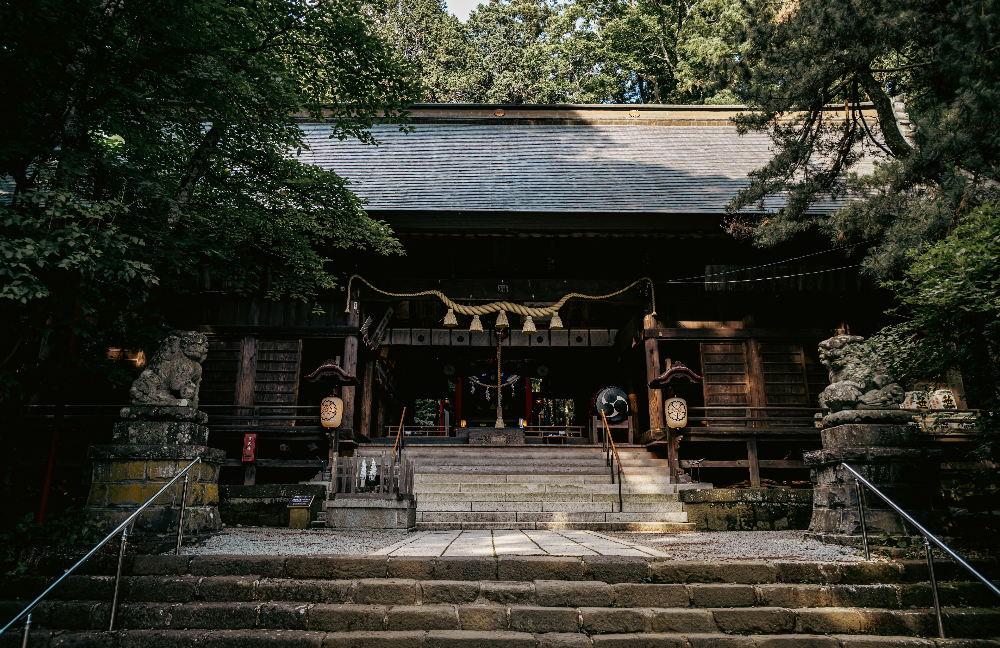

Tokyo, Kyoto💗, Fujikawaguchiko(Mt.Fuji).
SCROLL TO EXPLORE.
Nikon Z9 | 75mm | f/4 | Collab w/ @mby_0.0
Nikon Z9 | 32mm | f/5 | 1/200s

Nikon Z9 | 24mm | f/4 | 1/125s
Nikon Z9 | 24mm | f/4.5 | 1/200s
Nikon Z9 | 24mm | f/4 | 13s
Nikon Z9 | 24mm | f/6.3 | 1/125s
Nikon Z9 | 100mm | f/5.6 | 1/800s
Nikon Z9 | 24mm | f/5 | 1/60s